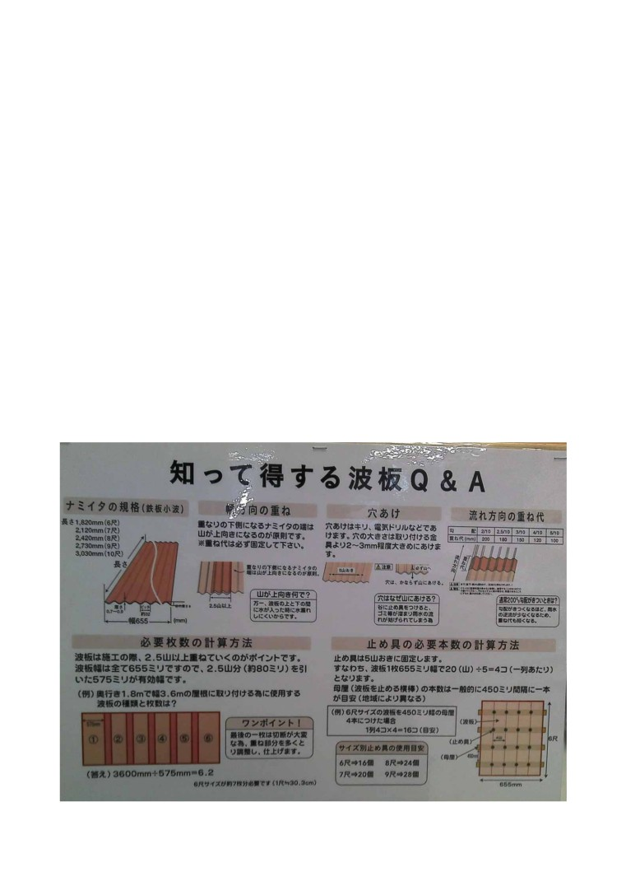

□最初のクギが重要
波板を２山重ねたら、重ねた山の端部をクギで固定します。波板を重ねた部分は、ハンマーでクギ
を打つこともできますが、打ちづらい場合はドリルで下穴を開けてもよいでしょう。
このときのポイントは、「固定をする１本目のクギに集中する」ことです。
クギを１本止めれば、全体の位置が決まります。
１本目を打つときにクギがズレてしまうと、波板に余計な穴が開いたり、設置ができなくなったりしま
す。１本目のクギ打ちを成功させることで、上手く仕上がる確率が高まります。
□ピッチ
１本目のクギ打ちをしたら、次のクギを使って等間隔で固定していきます。この固定をしていく間隔
のことを、「ピッチ」といいます。クギの固定ピッチは４～５山で行うと、波板が風などでバタつくこと
がなくなります。今回の波板固定は、「５山ピッチ」で行いました。
□表裏
ポリカの（紫外線対応）耐候処理されている面かはメーカーによりシールの貼り方が裏・表と違いま
すし切ってしまうとわからなくなるのでシールで確認しマスキングテープなどを貼っておいてくださ
い。
エンボス付だとエンボス側が陽の面のようです。
マットタイプ（片面がザラザラしているタイプ）はツルツル面が太陽側です。